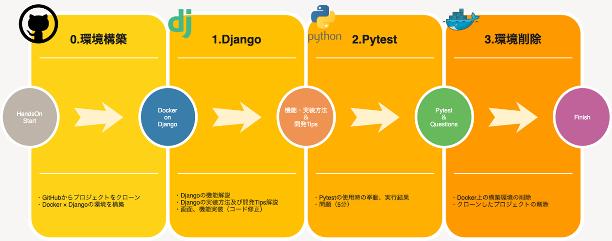

Python×DjangoのWEBサイト作成&テスト自動化を通して実践スキルを学ぼう！
1. 事前準備
- VSCodeインストール
- Dockerインストール
- Gitインストール、GitHubアカウントの作成
2. 今回の流れ（画面作成 ～ テスト）
Djangoフレームワークを用いて、商品の検索や詳細情報の確認を行うことの出来る画面を作成。その後、テストコードを作成し実際に作成した画面に対するテストまで実施します。
3. 手順
全体手順としては以下の流れで進めます。

- デモアプリクローン
- アプリケーションコード修正
- デモアプリの起動・動作確認
- テストコード作成
- テスト実施
- 後片付け